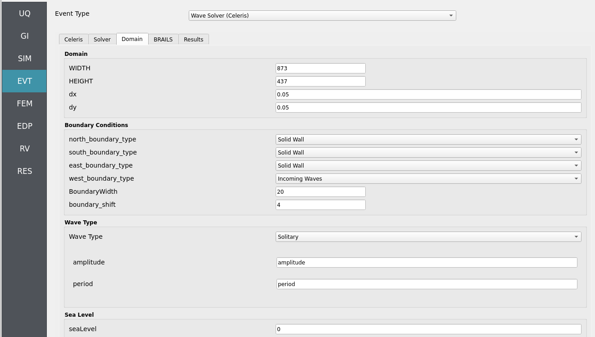

Domain
Defines the numerical domain for the wave propagation solver in CelerisAi.
{kind=link}

This class sets up the domain geometry (\(x_1\), \(x_2\), \(y_1\), \(y_2\)) and resolution (\(N_x\), \(N_y\)),
handles bathymetric/topographic data (via an instance of a Topodata class),
configures boundary sea levels on each face (north, south, east, west),
and stores critical parameters such as Courant number (Courant), friction,
and base depth.
Two main configuration modes are supported:
Celeris format Reads from a
config.jsonfile (iftopodata.datatype == "celeris").Manual Uses arguments passed directly to the constructor.
This class also defines utility methods to:
Create a meshgrid for the domain (
grid).Load and interpolate topographic/bathymetric data (
topofield,bottom).Compute maximum depth (
maxdepth) and highest topography (maxtopo).Compute the time step (
dt) based on Courant criteria.Provide reflection indices for solid boundary conditions (
reflect_x,reflect_y).Create Taichi field templates for solver states (
states,states_one).
Attributes
- precision
ti.types.primitive_types Taichi precision (e.g.,
ti.f32,ti.f64).- x1, x2, y1, y2float
Spatial domain boundaries.
- Nx, Nyint
Number of grid cells in x and y directions.
- topodata
Topodata Instance that handles bathymetry/topography data.
- north_sl, south_sl, east_sl, west_slfloat
Sea level values for each boundary face.
- Courantfloat
Courant number for numerical stability.
- isManningint
Flag to indicate if Manning friction is used.
- frictionfloat
Friction value (e.g., Manning’s n).
- base_depth_float or None
Reference depth for the domain. If None, it is inferred from topography.
- Boundary_shiftint
Shift parameter used for boundary indexing or reflection.
- pixels
ti.field 2D Taichi field (shape = [Nx, Ny]) for visualization/debugging.
- gfloat
Gravitational constant (9.80665).
- configfiledict or None
Loaded JSON dictionary if using Celeris config format.
- seaLevelfloat
Reference sea level (default = 0.0).